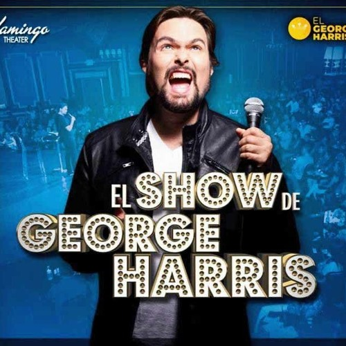

George Harris, para mi es un excelente comediante. Lo que mas me gusta de su show es que siempre hace referecia de como eran las madres venezolanas de antes, su contenido basicamente es de su experiencia como Venezolano, Cuando muchas veces estoy triste por estar lejos de mi familia, escuchar a este comediante es como una vitamina para levantar el animo.
Conoce a George Harris
Mejor conocido como “El George Harris”, nació en Caracas, Venezuela. Él es comunicador social, actor, presentador, un gran comediante, pero sobre todo un excelente influencer.
Sus Estudios
George Harris estudió en la Universidad Central de Venezuela (UCB), ya en el año 2002 obtuvo el título de Licenciado en Comunicación Social.
TV en Venezuela
Cuando era niño veía telenovelas y programas de canales como RCTV y Venevisión; al pasar el tiempo George Harris tuvo la oportunidad de participar en algunos programas de estos mismos canales que gozan de gran reconocimiento en este país.
George como Inmigrante
El influencer se fue de su país debido a la situación política. George Harris llegó a Madrid, España donde trabajó en el puesto de atención al cliente en el metro de Madrid, después de un tiempo logró actuar en los canales españoles Antena 3 y TVE. Regresó a Venezuela y formó parte del programa La Pareja Dispareja de RCTV internacional; luego participó en algunos cortometrajes y películas, tales como Venezzia, Miranda Regresa y Elipsis. Vuelve a España para estrenar su propio show, titulado ¿Quién se quiere ir? Producción que llegó a ser todo un éxito, después lo presentó en Venezuela específicamente en el local Teatro Bar.
EL SHOW DE GEORGE HARRIS
Es presentado en el Flamingo Teatro Bar, también ubicado en Miami, donde cada presentación es un Sould Out, George Harris monta gran parte de su presentación por segmentos en su canal de YouTube, con una duración de 10 minutos hasta 20 minutos, en esta plataforma tiene 381 mil suscriptores y alcanza 250 mil reproduccione